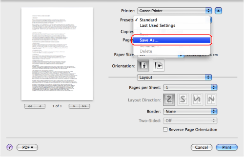
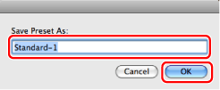

You can save printer driver settings that you frequently use as a Preset.
1.
From the [File] menu of the application software, select [Print].
The
[Print] dialog box is displayed.
2.
In each pane, specify the printer driver settings you want to save.
3.
Select [Save As] from [Presets].

4.
Enter a name for the settings in [Save Preset As] → click [OK].

The current settings are saved as a Preset.
The saved Preset will be displayed in [Presets] in the [Print] dialog box from the next time you open the dialog box.
|
NOTE
|
|
To print a document with the saved settings, select the Preset from [Presets] in the [Print] dialog box.
If you are using Mac OS X 10.6 or later, you can select [Only this printer] or [All printers] for the settings you want to save as a [Preset].
|